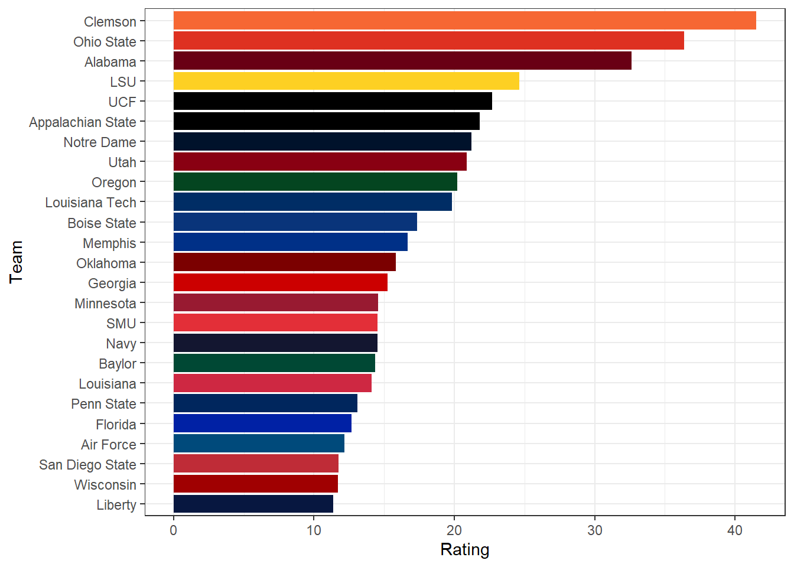

library(tidyjson)
library(dplyr)
library(httr)
fbs <-
httr::GET(
url = "https://api.collegefootballdata.com/teams/fbs?year=2019",
httr::add_headers(
Authorization = paste("Bearer", Sys.getenv("CFDB_API_TOKEN"))
)
)
fbs_teams <-
httr::content(fbs, "parsed") %>% # convert response to a nested list
spread_all %>% # rectangularize nested list into a dataframe
arrange(school) # make sure teams are in alphabetical orderSimple Rating System
R
ggplot2
college football
sports analytics
How football simple rating systems work. One sentence at a time.
Motivation
In my last post, I was playing around with data from an API offered by http://collegefootballdata.com.
Then I found some blog posts on the site, and I thought a couple of them on how Simple Rating Systems work were interesting.
In particular, this one.
They did all their coding in Python, but I’m becoming more and more of an R fan, so I thought I’d re-code the wheel, so to speak.
In their post, they used data from the 2019 season, so for consistency, I’ll do the same.
Also, in the last post, I was using tidyr to un-nest JSON data.
It seemed add to me that you have to do these repeated unnest_auto() steps to get things parsed out.
If it’s automatic, why do I have to keep doing it manually?
After some more Googling, I found the tidyjson package, which has a nice spread_all function that I’ll use instead.
Simple Rating System: The Math
This, to me, is the coolest part.
I had no idea this is how some rating systems work, and it’s pretty slick.
It’s just one big system of equations that you solve with regular ’ol linear algebra.
In other words, solve \(Ax=b\).
That’s it.
I’ll start with the \(b\) vector - that’s easiest to explain.
The b Vector
The \(b\) vector is each team’s average margin of victory for the season.
Couldn’t be any simpler.
The A Matrix
This is a little more complicated.
The \(A\) matrix will have dimensions of 130x130 - one row and column for each FBS team.
The diagonal will be 1’s (i.e., the identity matrix).
Think of the rest of the matrix in terms of rows.
We’ll set it up alphabetically, so the first row will be for Air Force.
First, we’ll count how many games Air Force played that season.
Then we’ll identify all of Air Force’s opponents - those are the columns.
As I said, the Air Force-Air Force entry will have a 1.
Moving across the columns, if Air Force didn’t play that team, put a 0 there.
If they did, divide the number of times Air Force played that team by the total number of games played and put that value in the column.
Keep doing that until you get to the last column (i.e., that last potential match-up).
Then repeat that process for the next team, Akron, and then the next, etc.
That’s it.
This matrix represents each team’s strength of schedule.
Pretty clever, right?
A teams rating is it’s mean margin of victory adjusted by it’s strength of schedule.
The Code
First we need to get all the FBS team names so we can exclude non-FBS games.
Now we’ll get team win-loss records.
records <-
httr::GET(
url = "https://api.collegefootballdata.com/games?year=2019",
httr::add_headers(
accept = "application/json",
Authorization = paste("Bearer", Sys.getenv("CFDB_API_TOKEN"))
)
)
team_records <-
httr::content(records, "parsed")
team_records <- tibble(data=team_records)
team_records <-
team_records %>%
tidyr::unnest_auto(data)Now get scores and margin of victory for each game and eliminate non-FBS games.
Eventually we’ll use this for the \(b\) vector, but first we’ll need it in this format for the \(A\) matrix.
scores <- team_records %>%
filter(home_team %in% (fbs_teams %>% .$school) &
away_team %in% (fbs_teams %>% .$school)) %>%
select(home_team, away_team, home_points, away_points) %>%
mutate(home_mov = home_points - away_points)
head(scores)Ok, now we can start to generate the \(A\) matrix.
First, I’ll populate it with the number of times each team faced each other.
There’s probably a more elegant way, but this is what came to me first.
A <- data.frame(diag(0, nrow=130, ncol=130),
row.names = fbs_teams %>% .$school)
colnames(A) <- fbs_teams %>% .$school
# populate dataframe with
for (r in 1:nrow(scores)){
home <- scores[r, 1] %>% .$home_team
away <- scores[r, 2] %>% .$away_team
A[home, away] <- A[home, away] + 1
A[away, home] <- A[away, home] + 1
}
# clean up
rm(away, home, r)
A[1:6, 1:6]Hold that thought on the \(A\) matrix - we need a little more work to proceed.
Next, rearrange the scores data to get one margin of victory score for each team and each game.
mov <- scores %>%
select(home_team, home_mov) %>%
rename(team = home_team, mov = home_mov) %>%
bind_rows(scores %>%
select(away_team, home_mov) %>%
rename(team = away_team, mov = home_mov) %>%
mutate(mov = -mov))Now count the total number of games each team played.
n_games <- mov %>% count(team) %>% .$nMultiply \(A\)’s columns by \(1 / n_games\).
MARGIN=1 specifies to sweep across columns.
A <- sweep(A, 1/n_games, MARGIN=1, FUN =`*`)Finally, add the identity matrix and \(A\) is built.
A <- A + diag(1, nrow=130, ncol=130)
A[1:6, 1:6]Now calculate the mean margin of victory for each team.
This is the \(b\) vector for the system of equations.
b <-
mov %>%
group_by(team) %>%
summarize(mean_mov = mean(mov)) %>%
.$mean_movIt took a while to build the system of equations, but solving it is a one-liner.
solve(A, b) Air Force Akron Alabama
12.17488262 -22.66408637 32.60720600
Appalachian State Arizona Arizona State
21.80515687 -13.03736947 1.10205537
Arkansas Arkansas State Army
-24.46835876 -0.52637216 1.05006201
Auburn Ball State Baylor
5.88613703 0.40799928 14.36295601
Boise State Boston College Bowling Green
17.32564683 -2.78480549 -33.10414546
Buffalo BYU California
10.20151104 0.46092289 -6.46928285
Central Michigan Charlotte Cincinnati
10.31277888 -4.34284716 7.36008829
Clemson Coastal Carolina Colorado
41.48627376 0.83014089 -11.45324149
Colorado State Connecticut Duke
-2.51297888 -22.92597291 -10.33694277
East Carolina Eastern Michigan Florida
-12.21872118 -2.75282448 12.69160016
Florida Atlantic Florida International Florida State
8.62463543 1.37276246 -6.07744689
Fresno State Georgia Georgia Southern
0.50823966 15.23789346 -1.56619791
Georgia State Georgia Tech Hawai'i
-2.53872623 -20.00376049 0.03002992
Houston Illinois Indiana
-11.22633847 5.83248366 6.84673009
Iowa Iowa State Kansas
10.19598383 8.32429892 -17.55664637
Kansas State Kent State Kentucky
9.86298135 -0.90629641 11.16790944
Liberty Louisiana Louisiana Monroe
11.38026279 14.12089636 -10.96010135
Louisiana Tech Louisville LSU
19.83837303 -11.11555104 24.61782878
Marshall Maryland Memphis
-4.53506310 -21.13126417 16.67762020
Miami Miami (OH) Michigan
3.40729287 -9.17435086 9.40439559
Michigan State Middle Tennessee Minnesota
-2.84667123 -5.41633827 14.54830499
Mississippi State Missouri Navy
-10.04679640 5.12551526 14.51847575
NC State Nebraska Nevada
-10.13346295 -1.06634224 -10.70442169
New Mexico New Mexico State North Carolina
-18.96441796 -26.88151749 1.61200847
North Texas Northern Illinois Northwestern
-1.33040741 -5.75767308 -9.39415805
Notre Dame Ohio Ohio State
21.22221810 10.59616933 36.35622851
Oklahoma Oklahoma State Old Dominion
15.82512098 3.23809017 -14.57638255
Ole Miss Oregon Oregon State
-0.47404615 20.18886699 -6.91414098
Penn State Pittsburgh Purdue
13.07833337 -4.24030653 -4.44792009
Rice Rutgers San Diego State
-7.94447288 -27.74865910 11.75886571
San José State SMU South Alabama
-0.51222213 14.52255973 -17.50751350
South Carolina South Florida Southern Mississippi
-20.16977658 -15.55091539 -3.01895055
Stanford Syracuse TCU
-10.41277836 -5.93538233 -1.45957680
Temple Tennessee Texas
2.25488829 -4.03217697 1.54246752
Texas A&M Texas State Texas Tech
0.24533392 -19.98074165 -2.56724537
Toledo Troy Tulane
-9.23735051 -1.27992009 -1.44073888
Tulsa UAB UCF
-9.98788905 7.89737667 22.70582261
UCLA UMass UNLV
-9.73407669 -28.89607277 -12.08819590
USC UT San Antonio Utah
3.58662283 -18.39429259 20.89793643
Utah State UTEP Vanderbilt
-9.99000619 -13.81130518 -22.07917803
Virginia Virginia Tech Wake Forest
1.72160891 8.58302730 1.14879646
Washington Washington State West Virginia
8.68703548 7.56504382 -12.05131807
Western Kentucky Western Michigan Wisconsin
11.04805953 10.09365243 11.70814611
Wyoming
10.07670372 If you’re familiar with linear models in R, this bit of code does the same thing.
Don’t forget to include a -1 to drop the intercept term.
lm_A <- cbind(A, b)
coefficients(lm(b ~ . -1 , data=lm_A)) `Air Force` Akron Alabama
12.17488262 -22.66408637 32.60720600
`Appalachian State` Arizona `Arizona State`
21.80515687 -13.03736947 1.10205537
Arkansas `Arkansas State` Army
-24.46835876 -0.52637216 1.05006201
Auburn `Ball State` Baylor
5.88613703 0.40799928 14.36295601
`Boise State` `Boston College` `Bowling Green`
17.32564683 -2.78480549 -33.10414546
Buffalo BYU California
10.20151104 0.46092289 -6.46928285
`Central Michigan` Charlotte Cincinnati
10.31277888 -4.34284716 7.36008829
Clemson `Coastal Carolina` Colorado
41.48627376 0.83014089 -11.45324149
`Colorado State` Connecticut Duke
-2.51297888 -22.92597291 -10.33694277
`East Carolina` `Eastern Michigan` Florida
-12.21872118 -2.75282448 12.69160016
`Florida Atlantic` `Florida International` `Florida State`
8.62463543 1.37276246 -6.07744689
`Fresno State` Georgia `Georgia Southern`
0.50823966 15.23789346 -1.56619791
`Georgia State` `Georgia Tech` `Hawai'i`
-2.53872623 -20.00376049 0.03002992
Houston Illinois Indiana
-11.22633847 5.83248366 6.84673009
Iowa `Iowa State` Kansas
10.19598383 8.32429892 -17.55664637
`Kansas State` `Kent State` Kentucky
9.86298135 -0.90629641 11.16790944
Liberty Louisiana `Louisiana Monroe`
11.38026279 14.12089636 -10.96010135
`Louisiana Tech` Louisville LSU
19.83837303 -11.11555104 24.61782878
Marshall Maryland Memphis
-4.53506310 -21.13126417 16.67762020
Miami `Miami (OH)` Michigan
3.40729287 -9.17435086 9.40439559
`Michigan State` `Middle Tennessee` Minnesota
-2.84667123 -5.41633827 14.54830499
`Mississippi State` Missouri Navy
-10.04679640 5.12551526 14.51847575
`NC State` Nebraska Nevada
-10.13346295 -1.06634224 -10.70442169
`New Mexico` `New Mexico State` `North Carolina`
-18.96441796 -26.88151749 1.61200847
`North Texas` `Northern Illinois` Northwestern
-1.33040741 -5.75767308 -9.39415805
`Notre Dame` Ohio `Ohio State`
21.22221810 10.59616933 36.35622851
Oklahoma `Oklahoma State` `Old Dominion`
15.82512098 3.23809017 -14.57638255
`Ole Miss` Oregon `Oregon State`
-0.47404615 20.18886699 -6.91414098
`Penn State` Pittsburgh Purdue
13.07833337 -4.24030653 -4.44792009
Rice Rutgers `San Diego State`
-7.94447288 -27.74865910 11.75886571
`San José State` SMU `South Alabama`
-0.51222213 14.52255973 -17.50751350
`South Carolina` `South Florida` `Southern Mississippi`
-20.16977658 -15.55091539 -3.01895055
Stanford Syracuse TCU
-10.41277836 -5.93538233 -1.45957680
Temple Tennessee Texas
2.25488829 -4.03217697 1.54246752
`Texas A&M` `Texas State` `Texas Tech`
0.24533392 -19.98074165 -2.56724537
Toledo Troy Tulane
-9.23735051 -1.27992009 -1.44073888
Tulsa UAB UCF
-9.98788905 7.89737667 22.70582261
UCLA UMass UNLV
-9.73407669 -28.89607277 -12.08819590
USC `UT San Antonio` Utah
3.58662283 -18.39429259 20.89793643
`Utah State` UTEP Vanderbilt
-9.99000619 -13.81130518 -22.07917803
Virginia `Virginia Tech` `Wake Forest`
1.72160891 8.58302730 1.14879646
Washington `Washington State` `West Virginia`
8.68703548 7.56504382 -12.05131807
`Western Kentucky` `Western Michigan` Wisconsin
11.04805953 10.09365243 11.70814611
Wyoming
10.07670372 To visualize the ratings, let’s make a plot of the top 25.
library(ggplot2)
library(forcats)
srs <-
tibble(team = fbs_teams$school,
rating = solve(A, b),
color = fbs_teams$color)
top_25 <-
srs %>%
arrange(desc(rating)) %>%
slice(1:25)
ggplot() +
geom_col(data = top_25,
aes(x = fct_reorder(team, rating), y = rating),
fill = top_25$color) +
coord_flip() +
theme_bw() +
ylab("Rating") +
xlab("Team")
In the College Football Data blog, they further refine the rating by factoring in home field advantage, conference strength, and things like that.
That’s fine, but I just wanted to get the basic mechanics down.